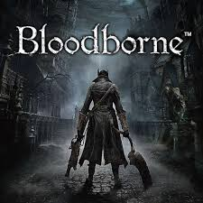

بلود بورن (بالإنجليزية: Bloodborne) هي لعبة فيديو من نوع أكشن ار بي جي، تم اصدارها في مارس 24, 2015، وهي متوفرة على أجهزة بلاي ستيشن 4 وبلاي ستيشن 5. اللعبة من تطوير فروم سوفت وير
موقع اللعبة الرسمي
أصعب ثلاث زعماء باللعبة
-
Gehrman, the First Hunter
Gehrman, the First Hunter is a boss in Bloodborne. Gehrman, the First Hunter wears a unique and unobtainable armor set, possesses the Burial Blade and a special variant of the Hunter Blunderbuss.
- Orphan of Kos
The orphan appears to be a Human/Great One offspring of the deceased Kos; the Orphan is a tall, skeletal humanoid. Its mouth is permanently fixed in a rictus grin and it constantly screams throughout the fight. A thin membrane is draped across its back like a cape, this transforms into a pair of wings when the Orphan enters its second form.
- Celestial Emissary
The Celestial Emissary is initially disguised as one of the numerous Celestial Minions, and its appearance changes very little when it changes phase, other than significant growth in size and eyes glowing cosmic blue.